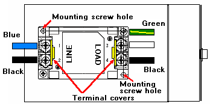
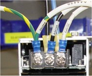
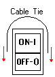
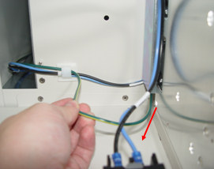
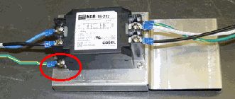
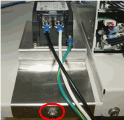
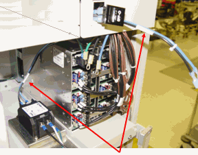
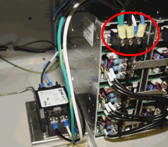

This procedure describes how to install the power inlet filter on instruments with a Cosel power supply. The filter is installed for MOD 10844 or when replacing a Magnetek power supply with a Cosel power supply.
Shut down the DxI instrument.
Select
Configure
> PC Admin > System Admin > Shutdown Instrument to exit the software in preparation for powering off the instrument.
Enter the password
Access2Support, and then select
OK.
At the pop-up
You must now turn off the instrument, using the instrument power switch, select
OK.
After the instrument software has shut down, turn off the instrument at the power switch.
Disconnect the instrument power cord from the rear of the instrument or from the wall outlet or UPS connection.
Assemble the power inlet filter hardware.
Mount the filter to the mounting plate (two screws)
Mount the wire harnesses to the filter.

Slide the terminal covers outward to cover the input and output terminals.
Disconnect the power input wires from the Cosel power supply.
Open the lower right instrument door to expose the power supply.
Remove the cover plate on the power supply (five screws).
Warning: Confirm that the instrument power cord is disconnected.
Note: To access the screws in the cover, it may be necessary to remove the lower right instrument door from the hinges.
Remove the clear plastic cover, and then disconnect the green, black, and blue wires from the power supply (three screws).
Figure 168: Cosel power supply

Compress the retention tabs and push the power switch out of the instrument housing. While pushing the switch out of the housing, release the upper retention tabs first and then the lower tabs.
Figure 169: Power switch
Note: To free the switch, it may be necessary to use a cable-tie to pull downward from behind the switch to compress the upper retention tabs.

Replace the power switch if it is damaged. A spare switch is included in the MOD kit.
Remove the black wire and the blue wire from the lower pair of terminals on the power switch, and discard the removed wires.
Note: These two wires connected the power switch to the input terminals on the power supply.
Install the power filter.
Pull the green wire out through the air baffle at the rear of the power supply.
This is the compartment to the left of the power supply and behind where the filter will be mounted.

Attach the green wire to the rear ground terminal of the power inlet filter.

Mount the power inlet filter to the instrument base at the left side of the power supply (one screw).

Route the black wire and the blue wire from the input end of the power inlet filter through the opening in the power switch.

Connect the black wire and the blue wire from the power inlet filter to the lower terminals of the power switch.
If the power switch has been replaced, then also connect the black wire and the blue wire from the rear of the instrument to the upper terminals of the power switch.
Note:
ON - I should be oriented up.
The blue wires should both be connected on the right side of the power switch.
Install the power switch into the instrument.
Route and attach the black, the white, and the green wires from the output on the power inlet filter to the input terminals on the power supply.
Note: There should be two wires on each terminal.

Mount the clear plastic cover over the input terminals on the power supply.
Install the cover on the power supply (five screws), and install the lower right instrument door if it was removed.
Verify operation of the power supply.
Restore any bypassed cover interlock switches, and close all covers.
Connect the power cord to the instrument.
Power on the instrument.
Allow the instrument to initialize.
Document installation of the power inlet filter in the MOD database.
Complete the fax back form included in the kit, and fax the form to the Regulatory department in Chaska.